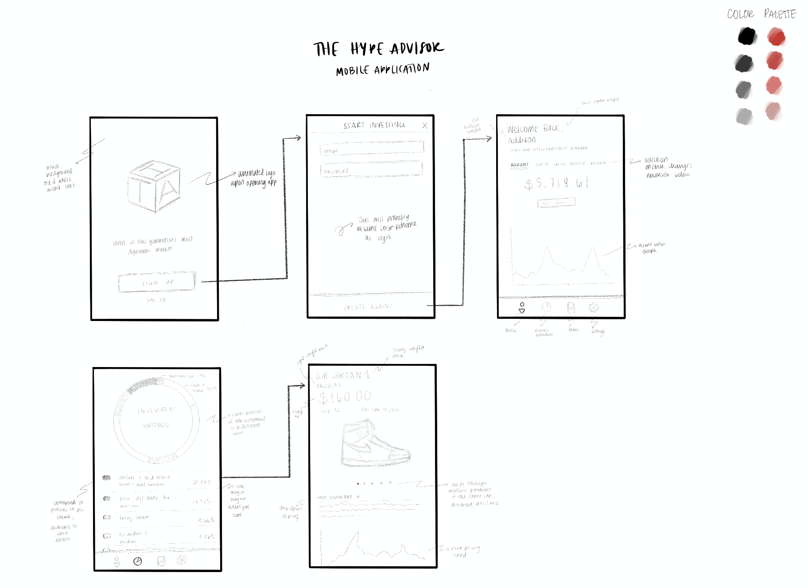
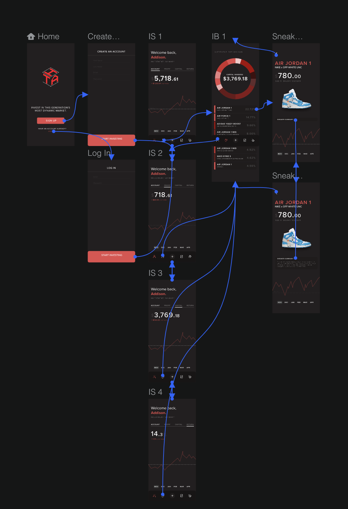

Background: The Hype Advisor is a hedgefund that aims to democratize access to investment in the streetwear market.
Objective: The objective of this project was to create an interactive mockup that shows the design and usability of a HA mobile app that allows users to monitor the changing features of their investment.
Key Application Design Features:
User registration/sign-in
Account Overview: showes the user's current capital, profit, and return over a given time period along with relevant graphics
Investment Breakdown: interactive pie-chart graphic that displays investment percentages of each show purchased, details on number/margin of capital used on a specific type of shoe, etc.
Investment Details: when tapping on a specific sneaker shows a breakdown of the shoe's price fluctuation over a given period of time, details about size/number/price purchased at, and historical facts surrounding the shoe's creation
News: top and relevant sneaker stories (similar to news tab on Robinhood)
Skills/Tools Involved:
Procreate (low fidelity sketches)
InVision Design (high fidelity wireframes)
Client collaboration
User Research
Low Fidelity Sketch:

High Fidelity Wireframe:

High Fidelity Interactive Wireframe: